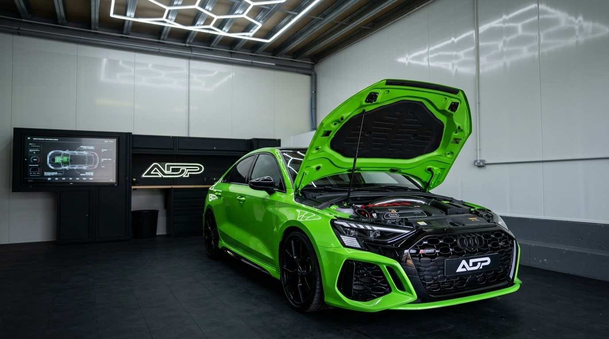
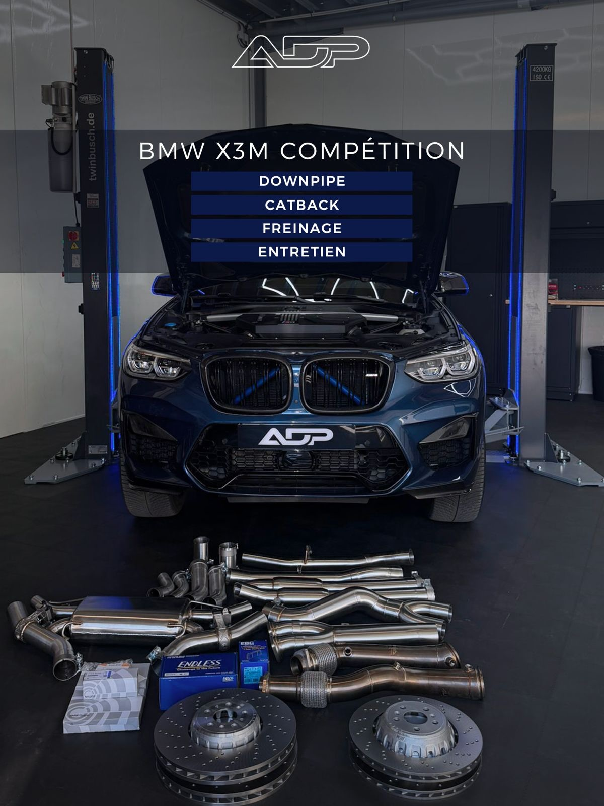
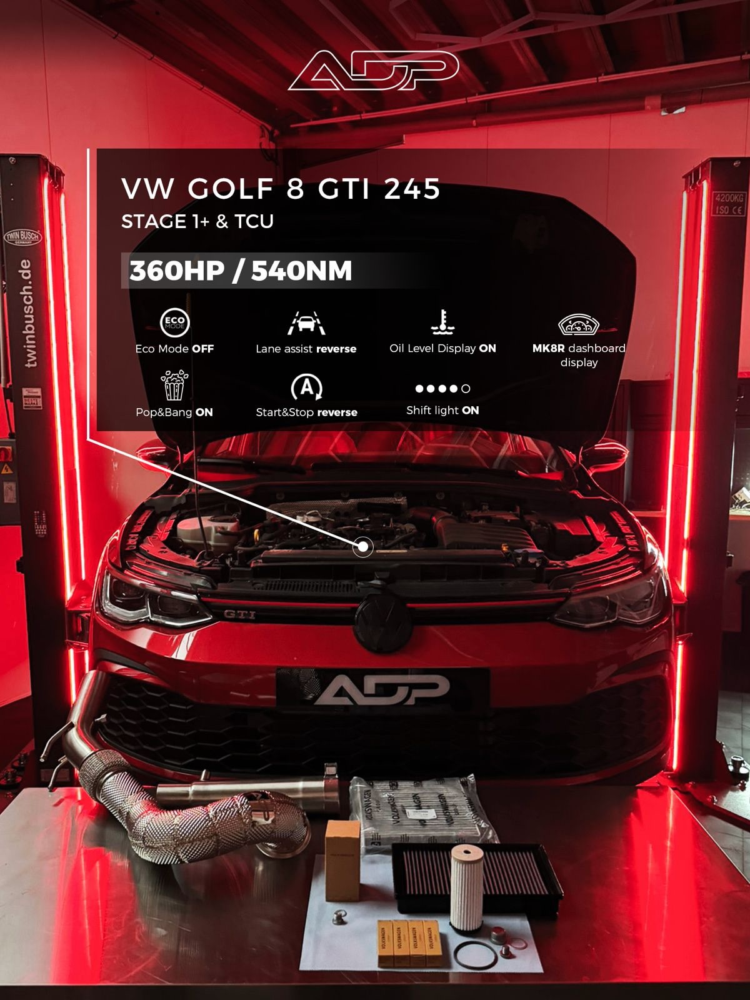
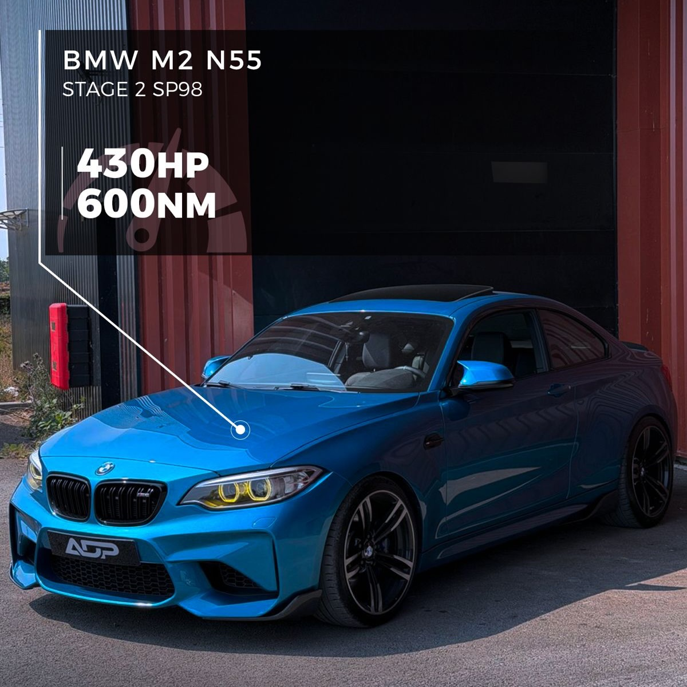

Entretien · Optimisation · Performance
La performance commence par l'exigence.
Atelier spécialisé VAG, BMW et Porsche en Yvelines. Entretien haute exigence, reprogrammation moteur sur-mesure, préparation performance — et passage au banc.

01 — Entretien
Votre voiture entretenue par un atelier spécialiste. Reprogrammation ou pas.
L'entretien est un métier à part entière, pas une étape avant la puissance. Révision, remise en état, gros travaux moteur ou transmission : on suit votre véhicule dans la durée, avec le même niveau d'exigence, que vous prépariez le moteur un jour ou jamais.
- Révisions constructeur & entretiens renforcés
- Distribution, embrayage, freinage, refroidissement
- Filtration et huiles hautes performances
- Diagnostic complet et lecture des défauts
- Devis ferme avant toute intervention

02 — Optimisation
Une cartographie écrite pour votre moteur. Pas un fichier générique.
Pour ceux qui le souhaitent : relevé du véhicule, écriture sur-mesure, passage au banc. De la simple optimisation d'agrément au Stage 2+, on cale aussi ce qui compte au quotidien — boîte, launch control, Start&Stop, shift light, Pop&Bang, affichages. Cartographie d'origine toujours sauvegardée.
- Stage 1 à Stage 2+ · multimap E85 / SP98
- Optimisation boîte DSG / S-tronic (TCU)
- Passage au banc de puissance
- Options codées : launch, shift light, Start&Stop, Pop&Bang
Les gains sont relevés au banc, au cas par cas — ils dépendent du modèle, du carburant et de l'état mécanique. Prestations FAP / EGR et préparations non homologuées : usage circuit ou export uniquement.

03 — Performance
Quand l'objectif, c'est le chrono.
Préparations poussées : Stage 2+, turbos hybrides (TTE), multimap E85 / SP98, rolling launch, suivi des relevés d'accélération. Cartographies dédiées aux véhicules d'usage circuit.
- Stage 2+ et turbos hybrides (TTE)
- Multimap E85 / SP98 & rolling launch
- Relevés d'accélération (DRAGY) et validation au banc
- Préparation piste — usage circuit / non homologué route
Réalisations
Entretiens et préparations passés à l'atelier.
Glissez ou utilisez les flèches · cliquez une fiche pour l'agrandirGlissez pour parcourir · appuyez pour agrandir
Comment ça se passe
Trois étapes. Rien d'improvisé.
Vous nous transmettez la motorisation exacte et votre besoin — entretien, optimisation ou les deux — on planifie le passage à l'atelier.
- 1
Diagnostic & objectifs
Lecture OBD, bilan mécanique, échange sur ce que vous recherchez. Devis ferme avant toute intervention.
- 2
Passage à l'atelier
Entretien et remise en état, et / ou écriture cartographie sur-mesure avec passage au banc si optimisation.
- 3
Contrôle & restitution
Essai, vérification des paramètres, bilan. Cartographie d'origine sauvegardée le cas échéant.
Contact
Un entretien, un projet de puissance ?
Indiquez la motorisation exacte et ce que vous visez : on vous répond sous 24 – 48 h.